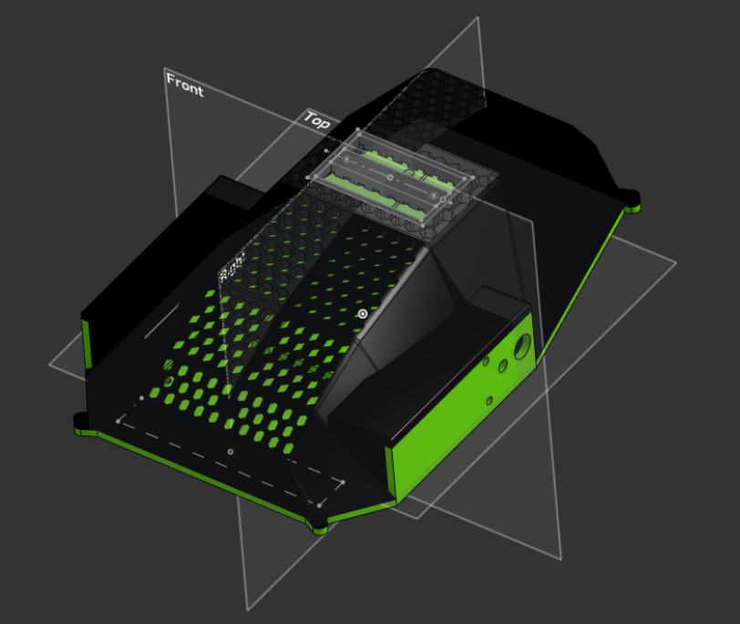
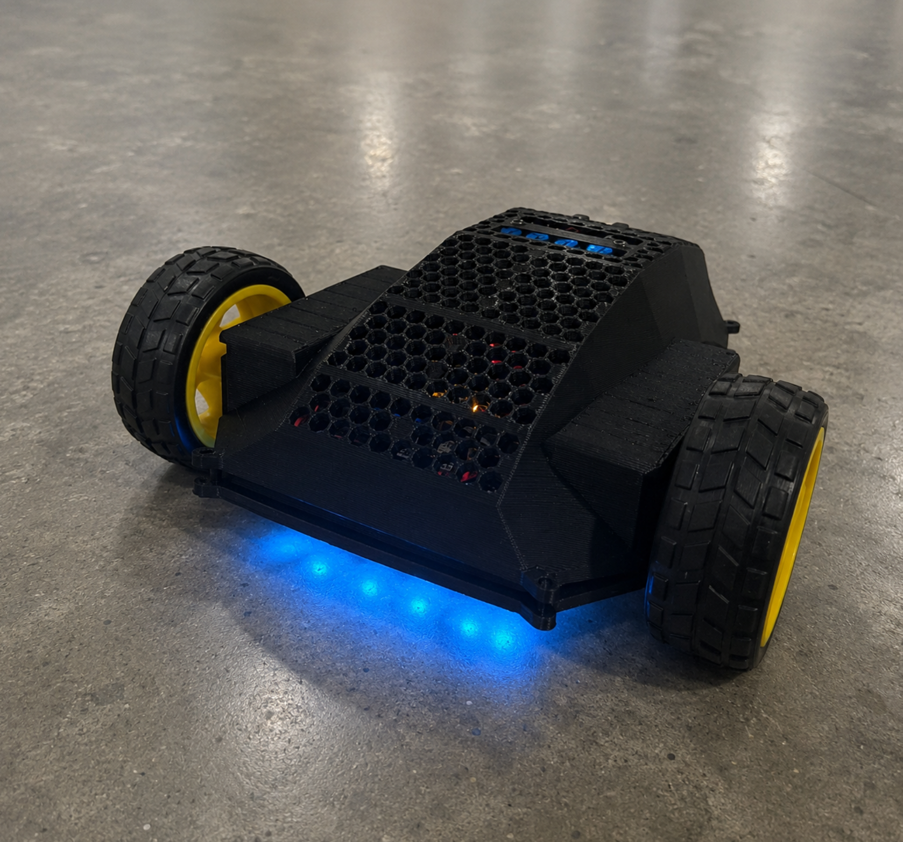
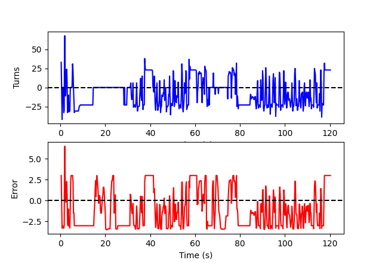
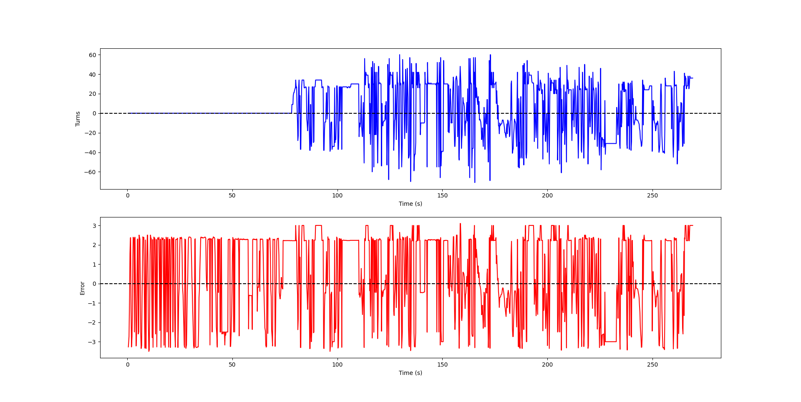
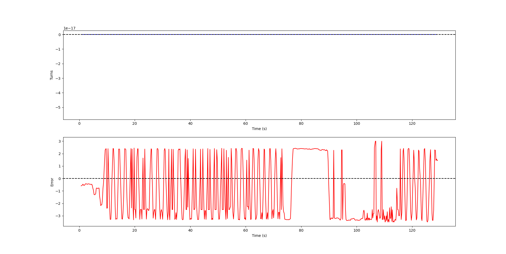
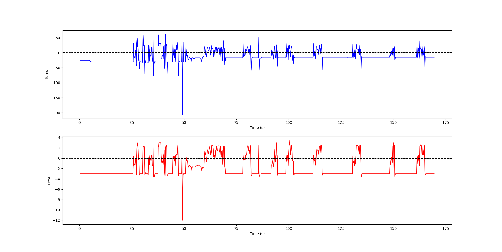
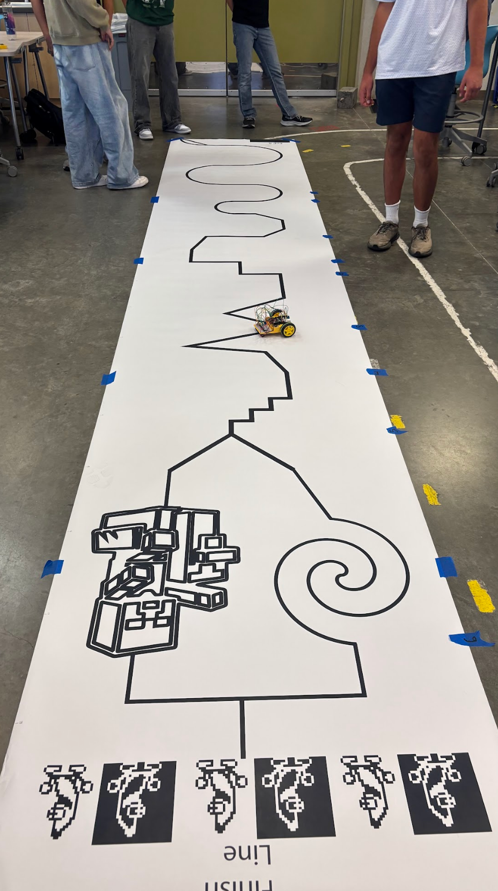
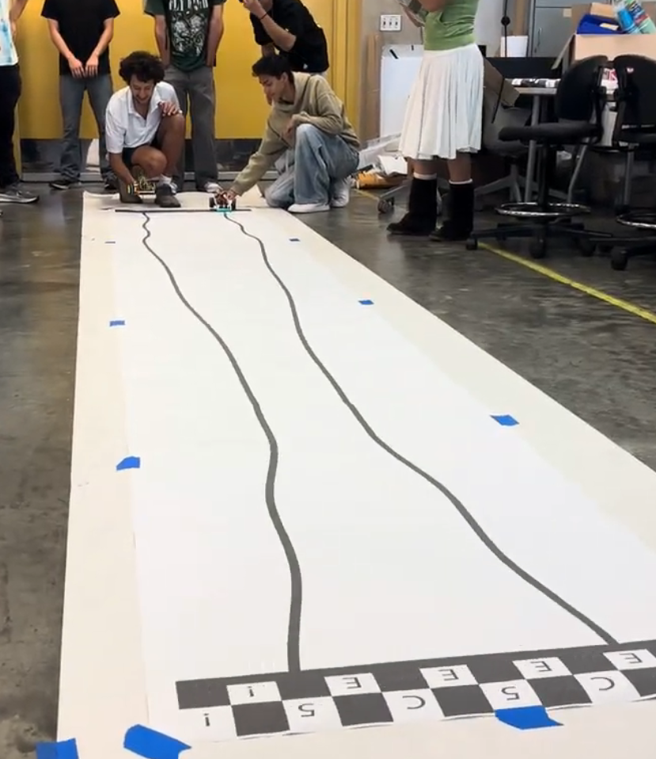
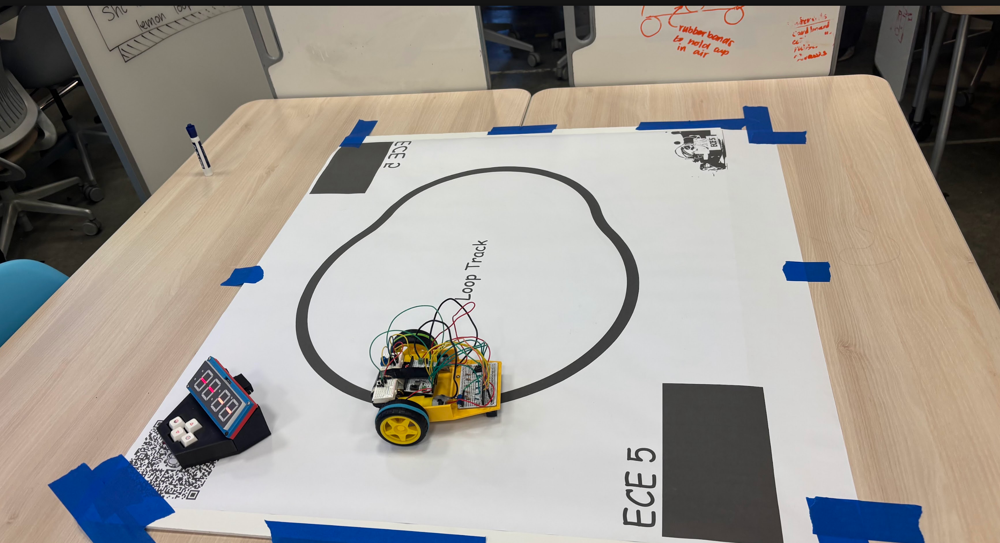
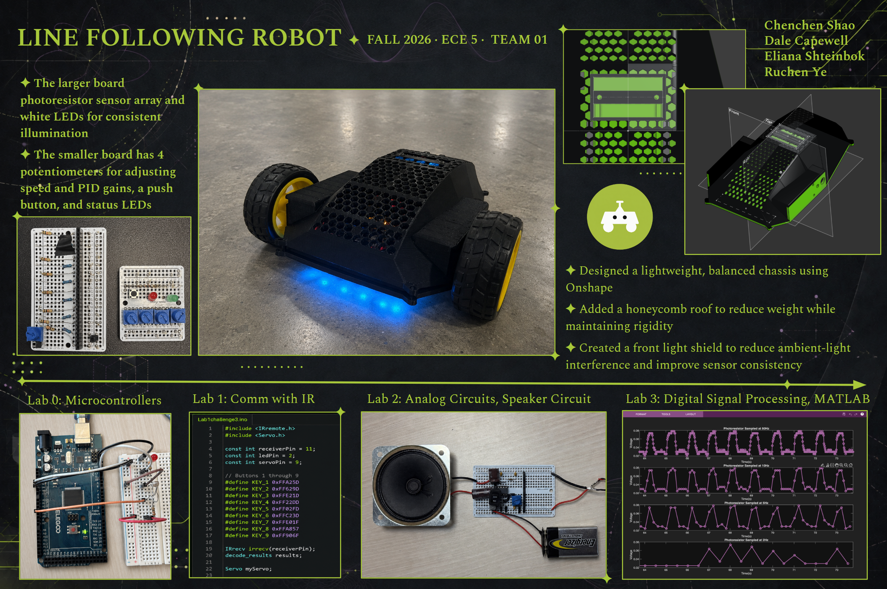

Planning & prototyping
We started off with arranging the photoresistors and the poterntiometers on some breadboards for the prototype. Combining them to give us input from the photoresistors as well as give us the ability to change the PID values.
UC San Diego · ECE 5 · Final Project
Our autonomous line following
robot. Designed, assembled, tuned, and raced by
Chenchen Shao, Dale
Capewell, Eliana Shteinbok, and Ruchen Ye.
This website documents our robot from early prototypes through competition day.

We started off with arranging the photoresistors and the poterntiometers on some breadboards for the prototype. Combining them to give us input from the photoresistors as well as give us the ability to change the PID values.

Early on in the proccess we desided to make the robot more compact so that it would be able to have dexterity and freedome of movement in the form of having a small turning radius.
We then proceeded to callibrate our prototype making sure that we were able to have it reliably follow a line by tuning the PID and reading the photoresistors.

With OnShape we were able to create a chassis design that would keep our elements compact, stable, and while being lightweight. We made the decision to add a homeycomb pattern to the roof to reduce print time and weight.
Competition-day build

The front photoresistor array measures reflected light across the track. Blue LEDs provide more consistent illumination. After calibration, the code compares the readings and estimates where the dark line is relative to the robot's center.
The ESP32 converts the sensor position into an error value. The PID controller uses that error to adjust the left and right motors through the motor driver, steering the robot back toward the line.
How our robot stayed centered and stable
PID control is for correcting the robot based on how far it is from the line. Proportional control reacts to the current error, integral control corrects error that remains over time, and derivative control reduces overshoot by reacting to fast changes.
Responds to the robot's current distance from the line.
Corrects error that remains over time.
Responds to fast changes and helps reduce overshoot.
We first calibrated each photoresistor. We increased proportional control until the robot tracked firmly, then reduced it when the robot began oscillating. We added a smaller derivative response to reduce overshoot and kept the integral term limited to prevent wind-up. We repeated this process at different speeds and on all three competition tracks.




Control and testing features used in our project
These excerpts explain the supplied control code. The uploaded C++ copies are identical, so differences from the class sample cannot be established from those files alone.
float numerator =
LDR[leftHighestPR] * leftHighestPR +
LDR[highestPResistor] * highestPResistor +
LDR[rightHighestPR] * rightHighestPR;
WeightedAve = numerator / denominator;
error = WeightedAve - totalPhotoResistors / 2;Nearby sensor strengths contribute to a smoother estimate of the line position.
if (sumerror > 5)
sumerror = 5;
else if (sumerror < -5)
sumerror = -5;
if (error == 0)
sumerror = 0;Limiting the accumulated error prevents the integral term from continuing to steer after the robot recovers.
Turn = error * kP
+ sumerror * kI
+ (error - lasterror) * kD;
M1P = -Turn;
M2P = Turn;Opposite motor corrections turn the robot without a separate steering mechanism.
lError.append(float(
rec_data.split("Error:")[1].split()[0]))
lTurns.append(float(
rec_data.split("Turn:")[1].split()[0]))
line1.set_data(time_domain, lTurns)
line2.set_data(time_domain, lError)Our Python test tool listened for ESP32 BLE notifications and plotted turn and error live. The attached final C++ code does not contain the BLE notification code, so this is presented as a separate tuning experiment.
Three tracks with three different control challenges

3rd placeThe changing line frequency demanded increasingly fast steering corrections.

3rd placeThe long path rewarded speed while still requiring stable line tracking.

5th placeRepeated turning tested controller stability and motor balance.
Our final project summary and drag race recording

With the limited amount of time provided in the class, we did the best we could to turn an ambitious concept into a working competition robot. We learned that control ideas cannot be separated from the physical system carrying them out.
For future projects, we would consider the physical limitations of our equipment much earlier. Our motors, photoresistors, and ESP32 could not always respond as powerfully or consistently as the ideas we were trying to implement required. Earlier testing of torque, minimum usable motor speed, sensor response, noise, and processing limits would help us choose a design that better matches the hardware and leave more time for reliable tuning.